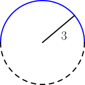
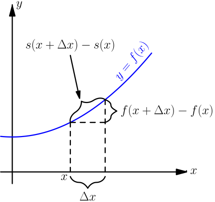
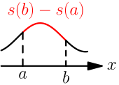
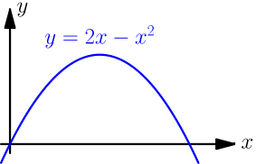
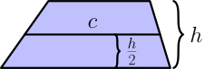
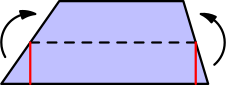
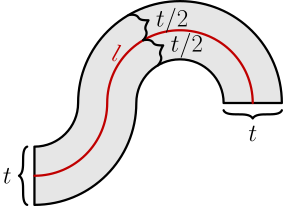
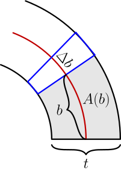
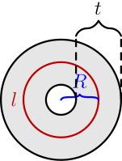
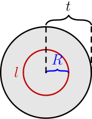

More Integrals¶
There are many fun and awesome things that can be done with integrals. Last time we looked into calculating areas and 3D volumes, but you'll be also amazed by everything else we can do.
Be sure to read the derivative chapter and the integral chapter first. This chapter uses things I showed in those chapters.
Arc Length¶

The length of the blue arc in the above image is quite easy to calculate. We can just complete it to a full circle, and we know its perimeter length is $3\tau$ so half of that is $3\tau/2 \approx 9.42$. But that's just a special case. What if we want to calculate the length of an arc taken from any $y=f(x)$ graph?
Let's assume that $f$ is a function that has a derivative, and say that the length of an arc to $x$ is $s(x)$, just like we did with areas. We get this:

For convenience, I'll define $\Delta s = s(x+\Delta x)-s(x)$ and $\Delta y = f(x+\Delta x)-f(x)$. This will be a mess anyway, but these handy variables make things a bit less messy.
Anyway, now you can see a little triangle in the picture so we can apply the Pythagorean theorem, but as usual, the result is not perfectly accurate because the graph is not guaranteed to be straight. We get this mess:
$$\begin{align}(\Delta s)^2 &\approx (\Delta x)^2 + (\Delta y)^2 \\ |\Delta s| &\approx \sqrt{(\Delta x)^2 + (\Delta y)^2} \\ &\approx \sqrt{(\Delta x)^2 + (\Delta x)^2 \frac{(\Delta y)^2}{(\Delta x)^2}} \\ &\approx \sqrt{(\Delta x)^2 + (\Delta x)^2 \left(\frac{\Delta y}{\Delta x}\right)^2} \\ &\approx \sqrt{(\Delta x)^2 \left(1+\left(\frac{\Delta y}{\Delta x}\right)^2\right)} \\ &\approx \sqrt{(\Delta x)^2}\ \sqrt{1+\left(\frac{\Delta y}{\Delta x}\right)^2} \\ &\approx |\Delta x|\ \sqrt{1+\left(\frac{\Delta y}{\Delta x}\right)^2} \\ \frac{|\Delta s|}{|\Delta x|} &\approx \sqrt{1+\left(\frac{\Delta y}{\Delta x}\right)^2} \\ \frac{\Delta s}{\Delta x} &\approx \sqrt{1+\left(\frac{\Delta y}{\Delta x}\right)^2}\end{align}$$In the last step I assumed that we moved $x$ right so $\Delta x$ was positive, and obviously $\Delta s$ was also positive.
The smaller the bit of the curve we're looking at, the less curvy it is and the more accurate this is:
$$\begin{align}\lim_{\Delta x\to0} \frac{\Delta s}{\Delta x} &= \lim_{\Delta x\to0} \sqrt{1+\left(\frac{\Delta y}{\Delta x}\right)^2} \\ &= \sqrt{1+\left(\lim_{\Delta x\to0}\frac{\Delta y}{\Delta x}\right)^2}\end{align}$$The $\lim$ things already look a lot like derivatives, but let's plug in our definitions of $\Delta y$ and $\Delta s$ just to make sure that they really are derivatives.
$$\begin{align}\lim_{\Delta x\to0} \frac{s(x+\Delta x)-s(x)}{\Delta x} &= \sqrt{1+\left(\lim_{\Delta x\to0}\frac{f(x+\Delta x)-f(x)}{\Delta x}\right)^2} \\ s'(x) &= \sqrt{1+(f'(x))^2}\end{align}$$That took a while, but we're done! This arc length thing is yet another one of my favorite math stuff.
Example: More Jumping¶
Problem
A player jumps along the parabola $y=2x-x^2$. How long is the arc that the player's path traces above the x axis?

First things first – let's figure out when the graph hits the $x$ axis; that is, when $y=0$:
$$\begin{align}2x-x^2&=0 \\ (2-x)x&=0 \\ 2-x=0\ \text{or}&\ x=0 \\ x=2\ \text{or}&\ x=0\end{align}$$Now we can just plug in $a=0$, $b=2$ and $f(x)=2x-x^2$ to our formula.
$$\begin{align}f(x) &= 2x-x^2 \\ f'(x) &= 2-2x\end{align}$$$$\begin{align}& \int_a^b \sqrt{1 + (f'(x))^2}\ dx = \int_0^2 \sqrt{1+(2-2x)^2}\ dx \approx 2.96\end{align}$$Use your favorite symbolic calculation library for calculating the integral. I did it with sympy:
>>> from sympy import *
>>> init_printing()
>>> x = Symbol('x')
>>> integrate(sqrt(1 + (2-2*x)**2), (x,0,2))
asinh(2)
──────── + √5
2
>>> float(integrate(sqrt(1 + (2-2*x)**2), (x,0,2)))
2.957885715089195
In cases like this I don't recommend worrying about what asinh is.
The important thing is that we can convert the answer to a float.
Calculating the precise value of the integral with sympy takes a while, but it does it faster if we tell it to just evaluate the whole thing with floats. The answer is not as precise, but the error is hardly noticable.
>>> Integral(sqrt(1 + (2-2*x)**2), (x,0,2)).evalf()
2.95788571508920
We didn't try to calculate the integral by hand because it turns out to be surprisingly difficult. I tried it, and after using several "advanced" tricks I managed to turn it into this:
$$\begin{align}\int_0^{\arctan(2)} \frac{1}{(\cos(t))^3}\ dt\end{align}$$Then I found a youtube video about integrating $1/(\cos(t))^3$. It was 6 minutes long, but it didn't include the trial and error needed for figuring out what to do.
Boring Trapezoid Area¶
This section has nothing to do with integrals, but we need it in the next section. Let's find the area of shapes like this:

The line with length $c$ is centered between the topmost and the bottommost line, and all horizontally drawn lines are parallel with each other.
Let's cut off and rotate the ends:


The area is obviously just $ch$.
My Thick Line Area Thing¶
I'm sure someone has invented this before me, but I haven't found a name for this yet. That's why the title above is like it is.
Let's try to figure out how to calculate an area like this if we know nothing but $t$ and $l$:

The area of a $t$ by $l$ rectangle is just $tl$. Let's see if it works when things are curved like this. Note that the distance between the red line and the black lines is always the same; calculating this would be more difficult if the thickness wasn't the same $t$ everywhere.
Let's start by thinking about a small, trapezoid-shaped piece of the area like in the image at right. Now everything is quite straight-forward and a lot like in the circle example.
$$\begin{align}A(b+\Delta b)-A(b) &\approx t \cdot \Delta b \\ \frac{A(b+\Delta b)-A(b)}{\Delta b} &\approx t \\ \lim_{\Delta b\to0} \frac{A(b+\Delta b)-A(b)}{\Delta b} &= t \\ A'(b) &= t \\ A(b) &= tb+C\end{align}$$Example: Circle Area #2¶
This section assumes that you know what $\tau$ is. Click here if you don't.
So far we have calculated a circle area with an integral, but now we can do it without thinking about any integrals.
This thing's area is obviously $tl = t \tau R$:

If we set $R=\frac t 2$, the inner circle's radius becomes 0:

The area is $t \tau R = t \tau \frac t 2 = \frac 1 2 \tau t^2$.